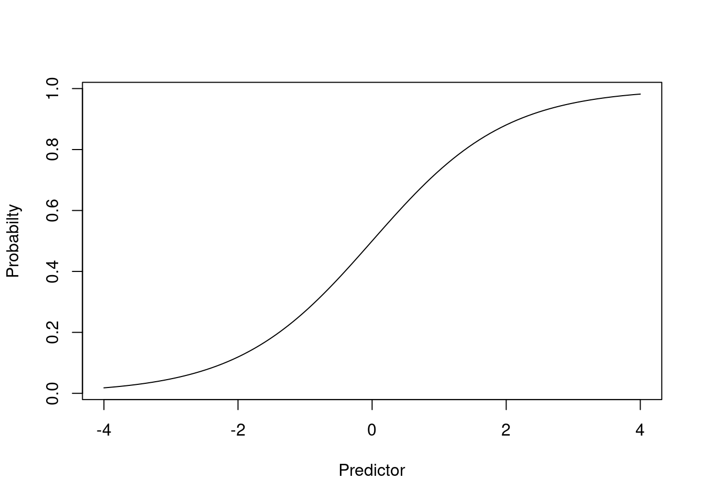
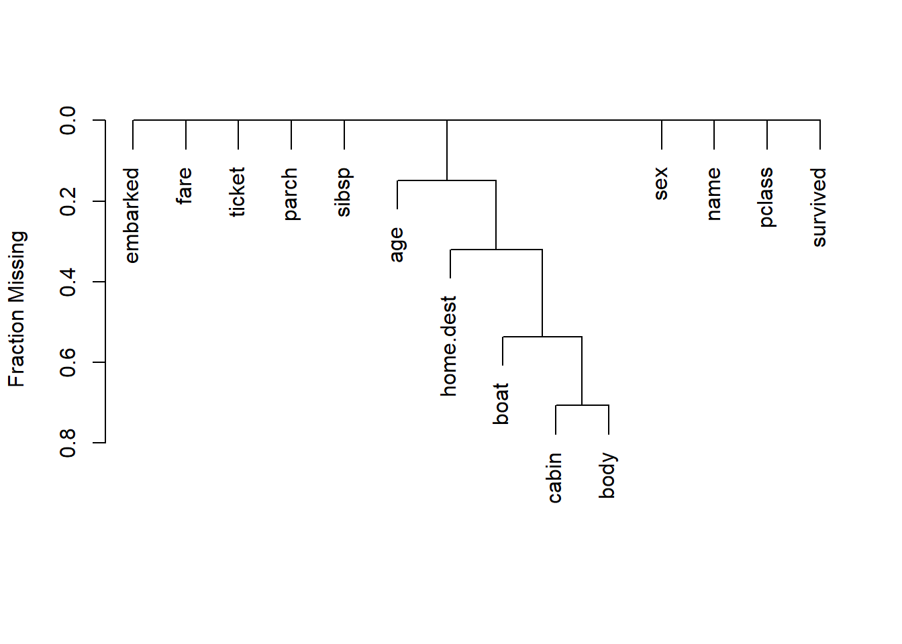
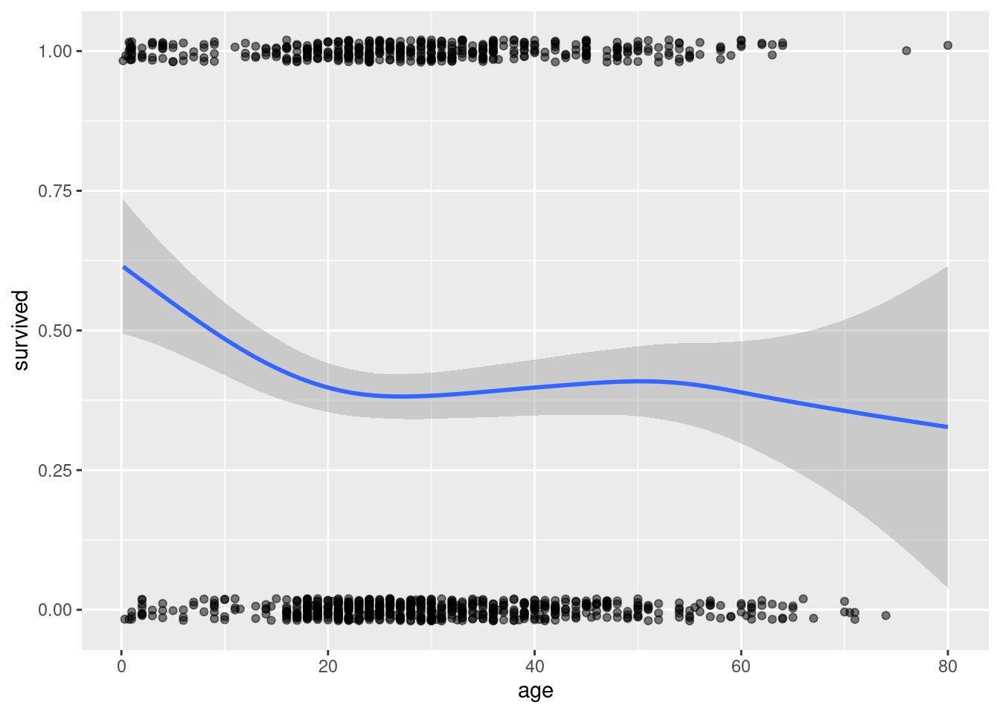
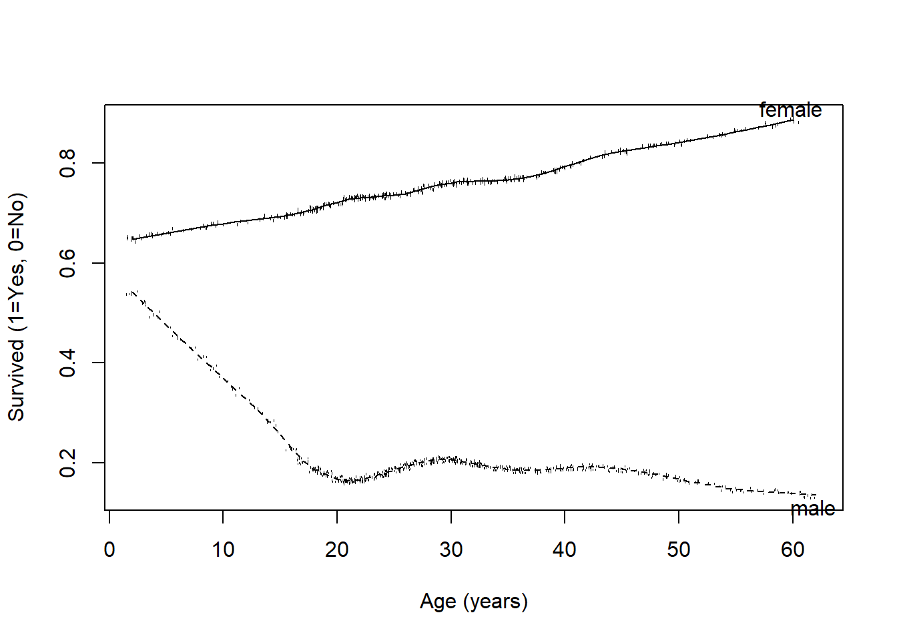

Code
tryCatch(source('pander_registry.R'), error = function(e) invisible(e))Lecture 04
March 2, 2025
tryCatch(source('pander_registry.R'), error = function(e) invisible(e))Types of variables
Binary data: e.g. sex, death
Nominal (unordered categorical) data: e.g. race, martial status
Ordinal (ordered categorical data): e.g. cancer stage, asthma severity
Quantitative data: e.g. age, blood pressure
Right censored data: e.g. time to death
The measures used to summarize and compare distributions vary according to the type of variable
Means: Binary, quantitative
Medians: Ordered, quantitative, censored
Proportions: Binary, nominal, ordinal
Odds: Binary, nominal, ordinal
Hazards: Censored
Which regression model you choose to use is based on the parameter being compared across groups
| Parameter | Approach |
|---|---|
| Means | Linear regression |
| Geometric means | Linear regression on log scale |
| Odds | Logistic regression |
| Rates | Poisson regression |
| Hazards | Proportional Hazards (Cox) regression |
| \(Y_i\) | Response measured on the \(i\)th subject |
| \(X_i\) | Value of the predictor measured on the \(i\)th subject |
| \(\theta_i\) | Parameter summarizing distribution of \(Y_i | X_i\) |
The parameter (\(\theta_i\)) might be the mean, geometric mean, odds, rate, instantaneous risk of an event (hazard), etc.
In linear regression on means, \(\theta_i = E[Y_i | X_i]\)
Choice of correct \(\theta_i\) should be based on scientific understanding of problem
General notation for simple regression model
\[g(\theta_i) = \beta_0 + \beta_1 \times X_i\]
General notation for regression model with one predictor
| \(g( )\) | Link function used for modeling |
| \(\beta_0\) | Intercept |
| \(\beta_1\) | Slope for predictor \(X\) |
The link function is often either the identity function (for modeling means) or log (for modeling geometric means, odds, hazards)
Borrowing information
Use other groups to make estimates in groups with sparse data
Intuitively, 67 and 69 year olds would provide some relevant information about 68 year olds
Assuming a straight line relationship tells us about other, even more distant, individuals
If we do not want to assume a straight line, we may only want to borrow information from nearby groups
Defining “Contrasts”
Define a comparison across groups to use when answering scientific questions
If the straight line relationship holds, the slope is the difference in parameter between groups differing by 1 unit in \(X\)
If a non-linear relationship in parameter, the slope is still the average difference in parameter between groups differing by 1 unit in \(X\)
Slope is a (first order or linear) test for trend in the parameter
Statistical jargon: “a contrast” across groups
The major difference between different regression models is the interpretation of the parameters
How do I want to summarize the outcome?
Mean, geometric mean, odds, hazard
How do I want to compare groups?
Answering these two simple questions provides a starting road-map as to which regression model to choose
Issues related to the inclusion of covariates remains the same
Address the scientific question: Predictor of interest, effect modification
Address confounding
Increase precision
Use logistic regression when you want to make inference about the odds
Allows for continuous (or multiple) grouping variables
Is OK with binary grouping variables too
Compares odds of responses across groups using ratios
Binary response variable
When using regression with binary response variables, we typically model the (log) odds using logistic regression
Conceptually there should be no problem modeling the proportion (which is the mean of the distribution)
However, there are several technical reasons why we do not use linear regression very often with binary responses
Why not use linear regression for binary responses?
Many misconceptions about the advantages and disadvantages of analyzing the odds
Reasons I consider valid: Scientific basis
Uses of odds ratios in case control studies
Plausibility of linear trends and no effect modifiers
Reasons I consider valid: Statistical basis
First (scientific) reason: Case-Control Studies
Studying a rare disease, so we do study in reverse
e.g. find subjects with cancer (and suitable controls) and then ascertain exposure of interest
Estimate distribution of the “effect” across groups defined by “cause”
Proportion (or odds) of smokers among people with or without lung cancer
| Lung Cancer + | Lung Cancer - | |
| Smoker | a | b |
| Non-Smoker | c | d |
In contrast, a cohort study samples by exposure (smoking) and then estimates the distribution of the effect in exposure groups
In a case-control study, we cannot estimate prevalence (without knowing selection probabilities)
Odds ratios are estimable in either case-control or cohort sampling scheme
Cohort study: Odds of cancer among smoker compared to odds of cancer among nonsmokers
Case-control study: Odds of smoking among cancer compared to odds of smoking among non-cancer
Mathematically, these two odds ratios are the same
Odds ratios are easy to interpret when investigating rare events
Odds = prob / (1 - prob)
For rare events, (1 - prob) is approximately 1
Odds is approximately the probability
Odds ratios are approximately risk ratios
Case-control studies usually used when events are rare
Second (scientific) reason: Linearity
Proportions are bounded by 0 and 1
It is thus unlikely that a straight line relationship would exists between a proportion and a predictor
Unless the predictor itself is bounded
Otherwise, there eventually must be a threshold above which the probability does not increase (or only increases a little)
expit <- function(x) {exp(x)/(1+exp(x))}
plot(function(x) expit(x), -4,4, ylab="Probabilty", xlab="Predictor")
Third (scientific) reason: Effect modification
The restriction on ranges for probabilities makes it likely that effect modification must be present with proportions
Example: Is the association between 2-year relapse rates and having a positive scan modified by gender?
Women relapse 40% of the time when the scan is negative, and 95% of the time when the scan is positive (an increase of 55%)
If men relapse 75% of the time when the scan is negative, then a positive scan can increase the relapse rate to at most 100%, which is only a 25% increase
| Proportions | ||
| Women | Men | |
| Negative Scan | 40% | 75% |
| Positive Scan | 95% | (up to 100%) |
| Difference | 55% | Up to 25% |
| Ratio | 1.64 | \(\leq 1.33\) |
With the odds, the association can hold without effect modification
| Odds | ||
| Women | Men | |
| Negative Scan | 0.67 | 3 |
| Positive Scan | 19 | (up to \(\infty\)) |
| Ratio | 28.5 | \(< \infty\) |
If the o dds of positive scan in men was 85.5, then the odds ratio would be exactly 28.5 (no effect modification)
Fourth (statistics) reason:
Classical linear regression requires equal variances across each predictor group
But, with binary data, the variance within a group depends on the mean
For binary \(Y\), \(E(Y) = p\) and \(Var(Y) = p(1-p)\)
With robust standard errors, the mean-variance relationship is not a major problem. However, a logistic model that correctly models the mean-variance relationship will be more efficient.
Modeling the odds of binary response variable \(Y\) on predictor \(X\)
Distribution: \(\textrm{Pr}(Y_i = 1) = p_i\)
Model: \(\textrm{logit}(p_i) = \textrm{log}\left(\frac{p_i}{1-p_i}\right) = \beta_0 + \beta_1 \times X_i\)
When \(X_i = 0\): log odds = \(\beta_0\)
When \(X_i = x\): log odds = \(\beta_0 + \beta_1 \times x\)
When \(X_i = x+1\): log odds = \(\beta_0 + \beta_1 \times x + \beta_1\)
To interpret as odds, exponentiate the regression parameters
To interpret as proportions (remember proportion = odds / (1 + odds))
Most common interpretations found by exponentiating the coefficients
Odds when predictor is 0 found by exponentiating the intercept: \(\exp(\beta_0)\)
Odds ratio between groups differing in the values of the predictor by 1 unit found by exponentiating the slope: \(\exp(\beta_1)\)
Stata commands
logit respvar predvar, [robust]logistic respvar predvar, [robust]R Commands
With rms package, lrm(respvar ~ predvar, ...)
robcov(fit) gives robust standard error estimates in `lrm’
In general, glm(respvar ~ predvar, family=“binomial”)
sandwich() in the sandwich library can give robust standard errors when using glm
Dataset at https://statcomp2.app.vumc.org/modern-regression/lectures/data/
Describes the survival status of individual passengers on the Titanic
Data on age available for many, but not all, subjects (data continually being updated)
Response variables is Survival
Predictor variable is Age
Possibly different age effects by sex (effect modification by sex)
# | fig-cap: Missing data patterns in the Tianic dataset
library(rms)
library(ggplot2)
titanic <- read.csv(file="data/titanic3.csv")
plot(naclus(titanic)) # study patterns of missing values
# | fig-cap: Scatterplot of age versus survival in the Titanic data with lowess smooth. This simple plot is not very useful because survival is either 0 or 1, making it hard to visualize any trends.
ggplot(titanic, aes(x=age, y=survived)) + geom_jitter(width=0, height=.02, alpha=.5) + geom_smooth()
# | fig-cap: Age versus survival by sex in the Titanic data by age using a super smoother. The trends are clearer with this smoothing approach.
with(titanic,
plsmo(age, survived, group=sex, datadensity=T, ylab="Survived (1=Yes, 0=No)", xlab="Age (years)")
)
Comments on the plots
Age is missing for many subjects, which we will not worry about in the following analysis
The simple scatterplot, even with superimposes lowess smooth, is worthless. I have jittered the point and altered their opacity to help visualize overlapping point.
More advanced plotting available in R (in this case, the plsmo() function) can help to visualize the data
Regression model for survival on age (ignoring possible effect modification for now)
Answer question by assessing linear trends in log odds of survival by age
Estimate the best fitting line to log odds of survival within age groups
\[\textrm{logodds}(\textrm{Survival} | \textrm{Age}) = \beta_0 + \beta_1 \times \textrm{Age}\]
An association will exist if the slope \(\beta_1\) is nonzero
In that case, the odds (and probability) of survival will be different across different age groups
m.titanic <- glm(survived ~ age, data=titanic, family = "binomial")
summary(m.titanic)| Estimate | Std. Error | z value | Pr(>|z|) | |
|---|---|---|---|---|
| (Intercept) | -0.1365340 | 0.1447153 | -0.94347 | 0.345443 |
| age | -0.0078985 | 0.0044065 | -1.79246 | 0.073059 |
(Dispersion parameter for binomial family taken to be 1 )
| Null deviance: | 1414.6 on 1045 degrees of freedom |
| Residual deviance: | 1411.4 on 1044 degrees of freedom |
(263 observations deleted due to missingness)
AIC: 1415.38
Number of Fisher Scoring Iterations: 4
\(\textrm{logodds}(\textrm{Survival} | \textrm{Age}) = -0.1365 - 0.007899 \times \textrm{Age}\)
General interpretation
Intercept is labeled “(Intercept)”
Slope for age is labeled “age”
Interpretation of intercept
*Estimated log odds for newborns (age=0) is \(-0.136534\)
Odds of survival for newborns is \(e^{-0.136534} = 0.8724\)
Probability of survival
Prob = odds / (1 + odds)
\(0.8724 / (1 + .8724) = 0.4659\)
predict(m.titanic, newdata=data.frame(age=0), type='response') 1
0.4659194 Interpretation of slope
Estimate difference in the log odds of survival for two groups differing by one year in age is \(-0.0078985\)
This estimate averages over males and females
Older groups tend to have lower log odds
Odds Ratio: \(e^{-0.0078985} = 0.9921\)
For five year difference in age: \(e^{-0.0078985 \times 5} = 0.9612\)
In Stata use “lincom age, or” or “lincom 5*age, or”
Note that if the straight line relationship does not hold true, we interpret the slope as an average difference in the log odds of survival per one year difference in age
There are several ways to get the odds ratio and confidence interval in R
# The coefficient and confidence interval (on the log-odds scale)
coef(m.titanic)["age"] age
-0.007898504 confint.default(m.titanic, "age")| 2.5 % | 97.5 % | |
|---|---|---|
| age | -0.016535 | 0.00073809 |
# Odds ratio for age and confidence interval for age (1 year increase)
exp(coef(m.titanic)["age"]) age
0.9921326 exp(confint.default(m.titanic, "age"))| 2.5 % | 97.5 % | |
|---|---|---|
| age | 0.9836 | 1.0007 |
# Odds ratio for age and confidence interval for age (5 year increase)
exp(5*coef(m.titanic)["age"]) age
0.9612771 exp(5*confint.default(m.titanic, "age"))| 2.5 % | 97.5 % | |
|---|---|---|
| age | 0.92065 | 1.0037 |
Using finalfit to create a nicer output table of the coefficients and confidence intervals
library(finalfit)
library(rms)
explanatory = c("age")
titanic$survived.factor <- factor(titanic$survived, levels=0:1, labels=c("Died","Survived"))
dependent = 'survived.factor'
label(titanic$age) <- "Age (years)"
finalfit(.data = titanic, dependent, explanatory)| Dependent: survived.factor | Died | Survived | OR (univariable) | OR (multivariable) | |
|---|---|---|---|---|---|
| Age (years) | Mean (SD) | 30.5 (13.9) | 28.9 (15.1) | 0.99 (0.98-1.00, p=0.073) | 0.99 (0.98-1.00, p=0.073) |
The ideas of Signal and Noise found in simple linear regression do not translate well to logistic regression
We do not tend to quantify an error distribution with logistic regression
Valid statistical inference (CIs, p-values) about associations requires three general assumptions
Assumption 1: Approximately Normal distributions for the parameter estimates
Large N
Need for either robust standard errors or classical logistic regression
Definition of large depends on the underlying probabilities (odds)
Recall the rule of thumb for chi-squared tests based on the expected number of events
Assumption 2: Assumptions about the independence of observations
Classical regression: Independence of all observation
Robust standard errors: Correlated observations within identified clusters
Assumption 3: Assumptions about variance of observations within groups
Classical regression: Mean-variance relationship for binary data
Classical logistic regression estimates SE using model based estimates
Hence in order to satisfy this requirement, linearity of log odds across groups must hold
Robust standard errors
Allows unequal variance across groups
Hence, do not need linearity of log odds across groups to hold
Valid statistical inference (CIs, p-values) about odds of response in specific groups requires a further assumption
Assumption 4: Adequacy of the linear model
If we are trying to borrow information about the log odds from neighboring groups, and we are assuming a straight line relationship, the straight line needs to be true
Needed for either classical or robust standard errors
Note that we can model transformations of the measured predictor if we feel a straight line is not appropriate
Inference about individual observations (prediction intervals, P-values) in specific groups requires no further assumptions because we have binary data
For binary data, if we know the mean (proportion), we know everything about the distribution including the variance
This differs from linear regression where we can have a correct model for the mean, but the assumption about the error distribution (Normality, homoskedasticity) can be incorrect
Slope is statistically different from 0 using robust standard errors
Observed data is atypical of a setting with no linear trend in odds of response across groups
Data suggests evidence of a trend toward larger (or smaller) odds in groups having larger values of the predictor
(To the extent the data appears linear, estimates of the group odds or probabilities will be reliable)
Many possible reasons why the slope is not statistically different from 0 using robust standard errors
There may be no association between the response and predictor
There may be an association in the parameter considered, but the best fitting line has zero slope
There may be a first order trend in the log odds, but we lacked the precision to be confident that it truly exists (a type II error)
Recall in our Titanic example that the effect of age appeared to differ by sex
We ignored this difference earlier, so our estimated age effect was a (weighted) average of the age effect in males and the age effect in female
Here is the plot again describing the trends we see in survival by age and sex (using plsmo).
# | fig-cap: Age versus survival by gender in the Titanic data by age using a super smoother.
with(titanic,
plsmo(age, survived, group=sex, datadensity=T, ylab="Survived (1=Yes, 0=No)", xlab="Age (years)")
)We could describe the observed differences in two way, both being correct
Gender modifies the age effect
Age modifies the gender effect
fit.titanic.female <- glm(survived ~ age, data=titanic, subset=sex=="female", family="binomial")
fit.titanic.female| Estimate | Std. Error | z value | Pr(>|z|) | |
|---|---|---|---|---|
| (Intercept) | 0.493374 | 0.2541885 | 1.9410 | 0.0522612 |
| age | 0.022516 | 0.0085354 | 2.6379 | 0.0083415 |
| Degrees of Freedom | 387 Total (i.e. Null) |
| Degrees of Freedom | 386 Residual |
| Null Deviance | 434.161 |
| Residual Deviance | 426.878 |
| AIC | 430.878 |
(78 observations deleted due to missingness)
fit.titanic.male <- glm(survived ~ age, data=titanic, subset=sex=="male", family="binomial")
fit.titanic.male| Estimate | Std. Error | z value | Pr(>|z|) | |
|---|---|---|---|---|
| (Intercept) | -0.66076 | 0.2248071 | -2.9392 | 0.0032902 |
| age | -0.02376 | 0.0072757 | -3.2657 | 0.0010921 |
| Degrees of Freedom | 657 Total (i.e. Null) |
| Degrees of Freedom | 656 Residual |
| Null Deviance | 667.847 |
| Residual Deviance | 656.557 |
| AIC | 660.557 |
(185 observations deleted due to missingness)
# Females
exp(5*coef(fit.titanic.female)["age"]) age
1.119161 exp(5*confint.default(fit.titanic.female,"age"))| 2.5 % | 97.5 % | |
|---|---|---|
| age | 1.0294 | 1.2168 |
# Males
exp(5*coef(fit.titanic.male)["age"]) age
0.8879858 exp(5*confint.default(fit.titanic.male,"age"))| 2.5 % | 97.5 % | |
|---|---|---|
| age | 0.82688 | 0.95361 |
\[\textrm{logit}(p_i | X_{1i},X_{2i}) = \beta_0 + \beta_1 * X_{1i} + \beta_{2i} * X_{2i} + \beta_3*X_{1i}*X_{2i}\]
\[\textrm{logit}(p_i | X_{1i}, X_{2i}=0) = \beta_0 + \beta_1 * X_{1i}\]
\[\textrm{logit}(p | X_{1i}, X_{2i}=1) = (\beta_0+\beta_2) + (\beta_1+\beta_3) * X_{1i}\]
# female has already been defined in the dataset, but if I wanted to create this variable I could do so
titanic$female <- (titanic$sex=="female")+0
fit.titanic.interact <- glm(survived ~ age + female + age*female, data=titanic, family="binomial")
summary(fit.titanic.interact)| Estimate | Std. Error | z value | Pr(>|z|) | |
|---|---|---|---|---|
| (Intercept) | -0.660761 | 0.2248071 | -2.9392 | 3.2902e-03 |
| age | -0.023760 | 0.0072757 | -3.2657 | 1.0921e-03 |
| female | 1.154134 | 0.3393376 | 3.4011 | 6.7106e-04 |
| age:female | 0.046276 | 0.0112156 | 4.1260 | 3.6909e-05 |
(Dispersion parameter for binomial family taken to be 1 )
| Null deviance: | 1414.6 on 1045 degrees of freedom |
| Residual deviance: | 1083.4 on 1042 degrees of freedom |
(263 observations deleted due to missingness)
AIC: 1091.44
Number of Fisher Scoring Iterations: 4
# Interaction model
coef(fit.titanic.interact)(Intercept) age female age:female
-0.66076066 -0.02375991 1.15413441 0.04627571 # Model fit just on male subjects
coef(fit.titanic.male)(Intercept) age
-0.66076066 -0.02375991 # Model fit just on female subjects
coef(fit.titanic.female)(Intercept) age
0.49337375 0.02251581 # Linear combinations from the interaction model give the female intercept and age slope
coef(fit.titanic.interact)[1] + coef(fit.titanic.interact)[3](Intercept)
0.4933738 coef(fit.titanic.interact)[2] + coef(fit.titanic.interact)[4] age
0.02251581
3.3 Comments on Interpretation
The slope for age is expressed as a difference in group means, not the difference due to aging. We did not do a longitudinal study in which repeated measurements were taken on the same subject.
If the group log odds are truly linear, then the slope has an exact interpretation as the change in survival due to a one year change in (any) age
Otherwise, the slope estimates the first order trend of the sample data and we should not treat the estimates of group odds or probabilities as accurate
It is difficult to see in the above example, but the CIs around the odds ratios are not symmetric
“From logistic regression analysis, we estimate that for each 5 year difference in age, the odds of survival on the Titanic decreased by 3.9%, though this estimate is not statistically significant (\(p = 0.07\)). A 95% CI suggests that this observation is not unusual if a group that is five years older might have an odds of survival that was anywhere between 7.9% lower and 0.4% higher than the younger group.”
The confidence interval and statistical test given in the output is called a Wald test. Other tests (Score, Likelihood Ratio) are also possible.
All tests are asymptotically equivalent
The Wald test is easiest to obtain, but generally performs the poorest in small sample sizes
The Likelihood Ratio test performs the best in small samples. We will discuss it later, including how to obtain the test using post-estimation commands.
The Score test is not bad in small samples, but is often hard to obtain from software. It is exactly equal to the Chi-squared test for binary outcomes and categorical predictors.
3.3.1 Bayesian Estimates and Interpretation
Bayesian approach to the logistic model requires specifying the model, prior distributions, and the likelihood
The model
Prior distributions on parameters
For the simple logistic regression model, we have parameters \(\beta_0\), and \(\beta_1\).
For now, we will use default prior distributions that are are intended to be weakly informative in that they provide moderate regularization and help stabilize computation. See the STAN documentation for more details
Appropriate priors can be based on scientific considerations
Sensitivity analyses can evaluate the the robustness of finding to different prior assumptions
The likelihood
\[\binom{n}{y} \pi^{y} (1 - \pi)^{n - y},\]
Because \(\pi\) is a probability, for a binomial model the link function \(g\) maps between the unit interval (the support of \(\pi\)) and the set of all real numbers \(\mathbb{R}\). When applied to a linear predictor \(\eta\) with values in \(\mathbb{R}\), the inverse link function \(g^{-1}(\eta)\) therefore returns a valid probability between 0 and 1.
The two most common link functions used for binomial GLMs are the
With the logit (or log-odds) link function \(g(x) = \ln{\left(\frac{x}{1-x}\right)}\), the likelihood for a single observation becomes
\[\binom{n}{y}\left(\text{logit}^{-1}(\eta)\right)^y \left(1 - \text{logit}^{-1}(\eta)\right)^{n-y} = \binom{n}{y} \left(\frac{e^{\eta}}{1 + e^{\eta}}\right)^{y} \left(\frac{1}{1 + e^{\eta}}\right)^{n - y}\]
\[\binom{n}{y} \left(\Phi(\eta)\right)^{y} \left(1 - \Phi(\eta)\right)^{n - y},\]
where \(\Phi\) is the CDF of the standard normal distribution.
Code
The mean_ppd is the sample average posterior predictive distribution of the outcome variable.
For each parameter, mcse is Monte Carlo standard error, n_eff is a crude measure of effective sample size, and Rhat is the potential scale reduction factor on split chains (at convergence Rhat=1).
Code
Interpretation
Slope for age is of primary scientific importance
A priori we assume that no association between age and survival. Specifically, we assumed a Normal prior with location (mean) of 0 and scale (standard devation) of 0.17 for \(\beta_1\).
Conditional on the data, we estimate that for every 1 year increase in age, the log odds of decreases by -0.0079 (95% credible interval -0.0169 to 0.0004).
To obtain the posterior odds ratio and 95% credible intervals, some additional commands are needed
Code
Code
Code
Code
Code
Code
The association between age and probability of survival was estimated using a Bayesian logistic regression model. The model did not adjust for other covariates and assumed a logit link function and Binomial likelihood. We assumed a weakly informative prior distribution for the log odds of survival given age (Normal prior with mean 0 and scale 0.17 for \(\beta_1\)). Conditional on the data, the posterior mean estimate indicates that comparing two subjects who differ in age by 5 years, the younger subject has a 1.04 fold increased odds of survival compared to the older subject. A 95% credible for this posterior odds ratio is from 1.00 to 1.09.
Note that this model does not consider gender, so it is averaging over the males and females. We will revisits this analysis where the age effect is analyzed separately in males and females.